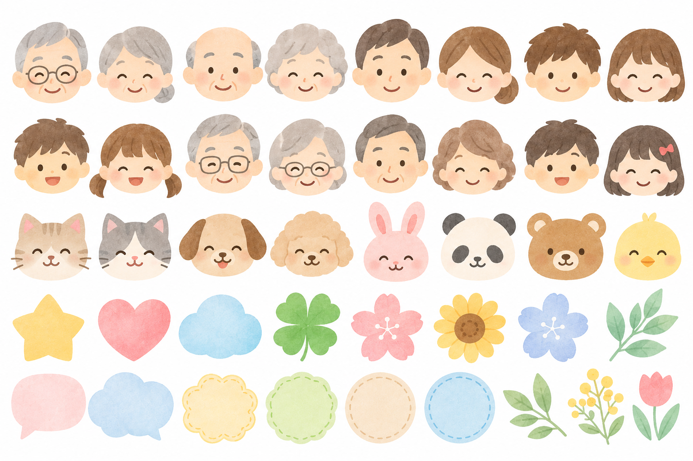

写真用 顔マスキングイラスト
家族向けのお手紙に添える写真で、写り込んだ他の方の顔を覆うためのイラストシートです。
イラストを保存（PNG）
元の画像を開く

Wordでの使い方
- PNG画像を保存し、Wordの「挿入」から画像を入れます。
- 「トリミング」で、使いたい顔のイラストをひとつ切り抜きます。
- 「文字列の折り返し」を「前面」にして、写真の顔の上に重ねます。
- 大きさと位置を調整し、隠したい顔全体が覆われていることを印刷前に確認します。
保存ボタンで保存できない場合は、元の画像を開き、パソコンでは右クリックから画像を保存してください。
このページは一般向けの素材配布を目的としたものではありません。掲載画像の自由利用・転載・再配布等を許諾するものではありません。